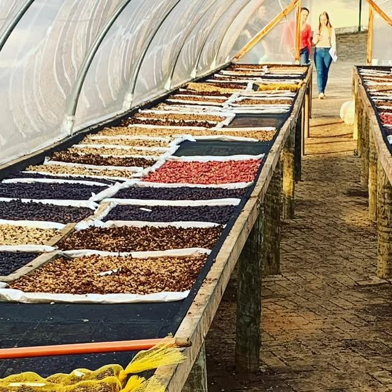
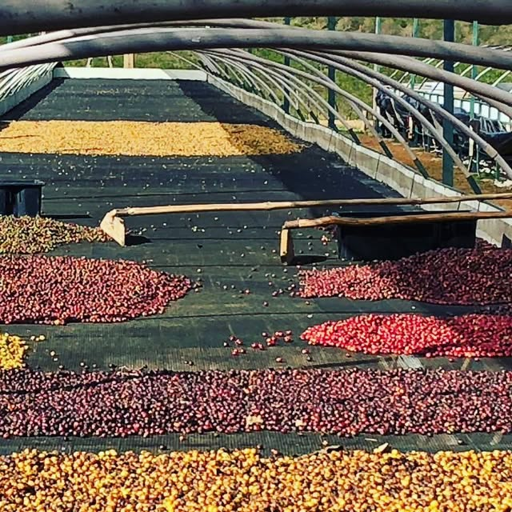
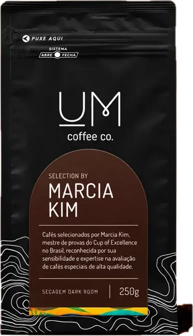

Secagem lenta, sem sol direto
Darkroom
Processo / Etapa 04
Vídeo · Boram Um · Dark room 2.0
O Darkroom
Em parceria com a Samsung Brasil, a fazenda criou um sistema que controla a umidade e a temperatura do Dark room. Como na torra, cada variedade e cada processo ganham o seu próprio perfil de secagem.
Fonte: descrição do vídeo no canal de Boram Um no YouTube.
“Fermentação lenta e contínua, mesmo durante a secagem.” Muda a complexidade e a doçura do café.
Boram Um, no tour da European Coffee Trip (abre em nova aba), onde aponta o Darkroom como o método preferido.
No Darkroom, o café seca devagar, em ambiente fechado e protegido da luz, sem sol direto. A fazenda também seca café em camas elevadas, sob cobertura, e em pátios de concreto. proposta de texto
Para torrefações e compradores, o método de secagem é uma das informações que ajudam a escolher um lote. Ao falar com a fazenda, pergunte qual método secou o lote que você procura. proposta de texto

Passo a passo
Como o café seca no Darkroom
Seis momentos, da entrada do café na sala até a saída do lote. A ordem e os detalhes são da fazenda; os números de cada lote ficam com a equipe.
-
01
Entrada na sala
O café chega da colheita seletiva e do processamento e entra no Darkroom em camadas finas, separado por lote e por variedade. proposta de texto
-
02
Escuro e ar parado
A sala é fechada e escura, sem sol direto. Sem luz e sem vento, a secagem fica lenta e o café é menos manuseado.
-
03
Controle de umidade e temperatura
Com a Samsung Brasil, a fazenda criou um sistema que mede e controla a umidade e a temperatura da sala, o tempo todo.
-
04
Um perfil para cada café
Como na torra, cada variedade e cada processo ganham o seu próprio perfil de secagem: tempo, temperatura e umidade.
-
05
Fermentação lenta
Durante a secagem, a fermentação continua devagar. Segundo Boram Um, é isso que muda a complexidade e a doçura do café.
-
06
Repouso e saída
Quando chega à umidade certa, o lote sai da sala, descansa e segue para o beneficiamento e a prova. proposta de texto
Dark Room e Cold Room
Duas salas, dois climas
Na tabela de exportação, os lotes da Competition Selection aparecem como “Dark Room / Cold Room”: secam nas duas salas. Alguns lotes dos Microlots, como Catucai 785 Red e Arara Yellow, de Bateia e Sertões, secam só na Cold Room.
A Cold Room é uma sala de clima frio e controlado, que deixa a secagem ainda mais lenta. proposta de texto
Fonte: tabela de exportação Fazenda Um, safra 25/26.
-

Sala escura com luz vermelha e bandejas de madeira empilhadas, com café. O post não diz que método é este. Ver post no Instagram (abre em nova aba)
-

Revolvimento do café em cama de secagem sob tela. Post “Yellow Bourbon”, 2019. Ver post no Instagram (abre em nova aba)
-

Camas elevadas na estufa, com vários lotes lado a lado. Post “Conilons & Robustas”, 2022. Ver post no Instagram (abre em nova aba)
-

Lotes de cerejas amarelas e vermelhas separados na cama. Post “Nano lotes”, 2020. Ver post no Instagram (abre em nova aba)
Secagem na Fazenda Um, em fotos do Instagram da fazenda (abre em nova aba).
O que é, em geral
Em geral, secar em “dark room” é deixar o café numa sala fechada e escura, sem sol, com a umidade do ar tirada por um desumidificador e ventiladores que renovam o ar. O produtor panamenho Ratibor Hartmann descreve assim o método que usa: o café fica em gavetas dentro da sala.
Segundo ele, o escuro limita os microrganismos e o café é menos manuseado. É a explicação de um produtor, que a reportagem não verificou.
O que esses métodos têm em comum, segundo o produtor citado: secagem mais lenta e mais uniforme, controle do ar da sala, menos manuseio e menos exposição a microrganismos. proposta de texto
Fonte: Perfect Daily Grind, 2021 (abre em nova aba), de outra fazenda.
Por que importa para a xícara
Boram Um diz que a fermentação lenta e contínua durante a secagem muda a complexidade e a doçura do café.
A Untold Coffee Lab chama o Pink Bourbon da Fazenda Um de “Dark Room Natural”, com notas de jasmim, framboesa e mel, e processo natural, segundo a própria Untold. A página dela não explica o que o nome significa.
Na leitura de Boram Um, é essa secagem lenta que dá ao café mais complexidade e doçura. O resultado final também depende da variedade, do lote e do processo de cada café. proposta de texto
Fontes: European Coffee Trip e Untold Coffee Lab.
Camas elevadas, pátios e Darkroom na Fazenda Um
| Camas elevadas | Pátios de concreto | Darkroom | |
|---|---|---|---|
| Onde proposta de texto | Sob cobertura. | Pátios de concreto. | Sala fechada e escura, sem sol direto. |
| Quanto tempo proposta de texto | A duração varia por lote e por variedade. | A duração varia por lote e por variedade. | Secagem mais lenta; a duração varia por lote e por variedade. |
| Temperatura e umidade proposta de texto | Seguem o clima do dia, com a proteção da cobertura. | Seguem o clima do dia. | Ambiente fechado, com controle de temperatura e umidade do ar. |
| O que muda na xícara proposta de texto | Referência de secagem ao ar livre, no ritmo do clima. | Referência de secagem ao ar livre, em piso de concreto. | Mais complexidade e doçura, segundo Boram Um. |
| Desde quando proposta de texto | Método usado na fazenda. | Método usado na fazenda. | Método preferido de Boram Um. |
Fontes: European Coffee Trip (métodos usados; preferência de Boram) e Instagram da fazenda (camas sob cobertura). As linhas com o selo são redação qualitativa, em validação com a fazenda: não trazem números.
Onde aparece nos cafés
-

Marcia Kim
Nanolote com “secagem Dark Room e torra média” e pontuação acima de 89 pontos SCA, segundo a Um Coffee Co.
-

Pink Bourbon
A Um Coffee Co. o descreve com processo natural e acima de 89 pontos SCA, sem citar o Dark Room. A Untold Coffee Lab chama o mesmo Pink Bourbon da Fazenda Um de “Dark Room Natural”, com notas de jasmim, framboesa e mel.
Perguntas sobre o Darkroom
Quanto tempo o café fica no Darkroom?
Depende do lote, da variedade e do processo: cada café tem o seu perfil de secagem. Pergunte à fazenda pelo lote que você procura.
Quais cafés passam pelo Darkroom?
Os 12 lotes da Competition Selection de Minas, os 3 da Experimental Selection (MN Alecrim, MN Abacaxi e MN Capim Santo), três lotes de Bateia e Sertões e o Bourbon Yellow da mesma origem.
O Darkroom muda o sabor?
Segundo Boram Um, a fermentação lenta durante a secagem dá mais complexidade e doçura. O resultado também depende da variedade e do processo.
Posso pedir amostra de um lote do Darkroom?
Sim. Na página de amostras, a saca vinho (Selection) reúne os lotes secos no Darkroom e na Cold Room.